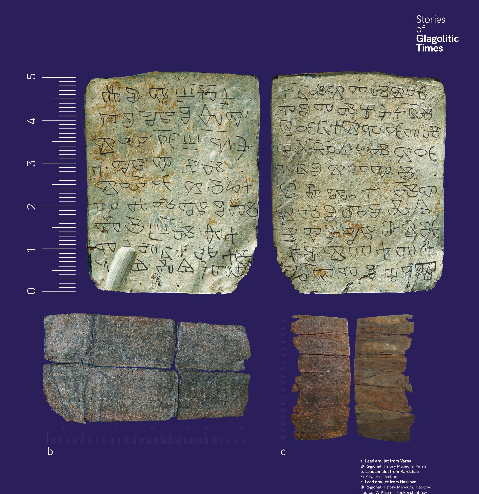

Ólom amulettek
A glagolita írást nemcsak könyvekben használták. Várna, Kardzsali és Haskovo közelében talált ólom amulettek imaszövegeket és varázsigéket tartalmaznak.


A glagolita írást nemcsak könyvekben használták. Várna, Kardzsali és Haskovo közelében talált ólom amulettek imaszövegeket és varázsigéket tartalmaznak.
Глаголицата не е използвана само за книги. Оловни амулети от Варна, Кърджали и Хасково носят молитвени надписи.